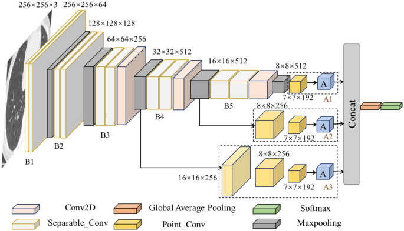

Model Train Validation Test
0 Team 6 CNN 99% 40% 32.2%
1 VGG16 97.7% 97.7% 91.2%Animal Detection
Presentation by: Chris, Grant, Will
Background
Image classification is the process of assigning a label or class to an input image based on its visual content. It is a fundamental task in the field of computer vision and has a wide range of applications, including object recognition, face detection, self-driving cars, and medical imaging.
The importance of image classification stems from its ability to enable machines to understand and interpret the visual world in the same way that humans do. This capability can be used to automate various tasks, such as identifying objects in an image, detecting and diagnosing diseases in medical images, and enabling self-driving cars to navigate safely. Additionally, image classification can be used to improve the accuracy of other computer vision tasks, such as object detection and segmentation.
With the increasing amount of visual data being generated and the advancement of deep learning techniques, the field of image classification has seen significant progress in recent years. This has led to the development of highly accurate image classifiers that can be trained on large datasets, and are able to generalize well to new images.

Question
Can we build a model that succesfully classifies the images of animals?
Exploratory Data Analysis
Our data is composed of 7 classes with over 1000 images
- Dogs
- Elephants
- Spiders
- Chickens
- Squirrels
- Wolves
- Butterflies
- Horses
Data Cleaning and Preparing for Model
Each Image was resized to 150x150
All the images were then given their own label , and converted into an array
All labels were then one hot encoded.
We then used a 75% traning set , 15% validation set , and 10% set split.
Methods
CNN
A convolutional neural network (CNN) is a type of deep learning model that is commonly used for image and video analysis. It is called “convolutional” because it uses a technique called convolution to analyze the data. In a CNN, the model learns to recognize patterns and features in images by analyzing small sections (or “patches”) of the image at a time, and then combining the information from these patches to understand the overall image. This makes CNNs well-suited for tasks such as image classification, object detection, and image segmentation.
VGG16 model (CNN)
- 13 convolutional layers
- 5 max pooling layers
- 3 fully connected layers
- GlobalAveragePooling2D() layer
- Dropout(0.2) layer
- Dense(1024, activation=‘relu’) layer
- Dropout(0.2) layer
- Dense(6, activation=‘softmax’) layer as the final output layer.
So in total, it’s 13 convolutional layers, 5 max pooling layers, 3 dense layers and 2 dropout layers.
The model is trained on the ImageNet dataset, which contains millions of images and thousands of object categories. Because of this, the model has learned rich feature representations for a wide variety of image-based tasks.

Evaluation
As seen in the table below the pretrain VGG model was able to perform significanlty better than our own model. In practice using pretrained models is the way to go and makes life so much easier.
Reasons our model did not perform well:
Lack of sufficient data: With a small dataset, the model may learn to memorize the training data, which can lead to overfitting.
Complex architecture: A complex model with a large number of parameters may have the capacity to memorize the training data, which can lead to overfitting.
High learning rate: A high learning rate can cause the model to quickly adapt to the training data, which can lead to overfitting if the model does not have time to converge.
Lack of regularization: Regularization techniques such as dropout, L1, and L2 regularization can help prevent overfitting by adding a penalty to the model for having too many parameters.
Reasons VGG16 performs well:
Deep architecture: VGG16 is a very deep model, with 16 layers, which allows it to learn a complex set of features from the input images. This depth enables the model to extract high-level features from the images, such as edges and shapes, which are important for image classification.
Small convolutional filters: VGG16 uses small convolutional filters (3x3) which enables the model to learn a large number of feature maps. This makes the model more expressive and able to capture fine-grained details in the images.
Max pooling: VGG16 uses max pooling layers which reduces the spatial dimension of the feature maps, making the model more robust to small translations of the objects in the images.
Large number of parameters: VGG16 has a large number of parameters, which enables it to learn a complex set of features from the images.
Pre-training: VGG16 was pre-trained on a large dataset (ImageNet), which means that it has already learned many useful features that can be used for other tasks.
ReLU activation: ReLU activation function is used in the model, which allows the network to learn non-linear decision boundaries, which helps to improve the performance of the model. VGG16 just does a much better job in detecting features especially since it has seen millions of similiar photos to ours.
The metric we will be using to evaluate our model is the accuracy.
Conclusion
We were able to succesfully build a model that classifies animals. We achieved this through a VGG16 model that performed at a 91% accuracy compared to ours that did 30%. This is a 61% difference and 200% increase. Thus our model was two-times better.
CNN models are changing the world in many aspects including:
Computer Vision: CNNS are used in a wide range of applications such as object detection, image classification, and image segmentation. These models are used in self-driving cars, security systems, and robotics.
Medical imaging: CNNs are used in medical imaging to improve the accuracy of diagnoses and to detect diseases such as cancer and heart disease.
Natural Language Processing: CNNs are used in natural language processing (NLP) to analyze text and speech, which has applications in language translation, text summarization, and sentiment analysis.
Recommender systems: CNNs are used in recommender systems to make personalized recommendations to users based on their past behavior and preferences.
Generative models: CNNs are used to generate new images, videos and audio, which have applications in art, entertainment, and communication.
Robotics: CNNs are used in robotics to help the robots understand and interact with their environment, they can be used for tasks such as grasping and manipulation.
CNNs have the potential to revolutionize many industries and improve the lives of many people by making tasks more efficient, accurate and faster. However, it’s important to keep in mind that these models are not perfect and may have limitations and biases, and it’s important to address these issues to ensure fair and ethical use of these models.
Sources
Very Deep Convolutional Networks for Large-Scale Image Recognition, K. Simonyan and A. Zisserman. arXiv:1409.1556. https://neurohive.io/en/popular-networks/vgg16/ https://arxiv.org/abs/1409.1556 https://www.robots.ox.ac.uk/~vgg/research/very_deep/ https://github.com/keras-team/keras-applications/blob/master/keras_applications/vgg16.py